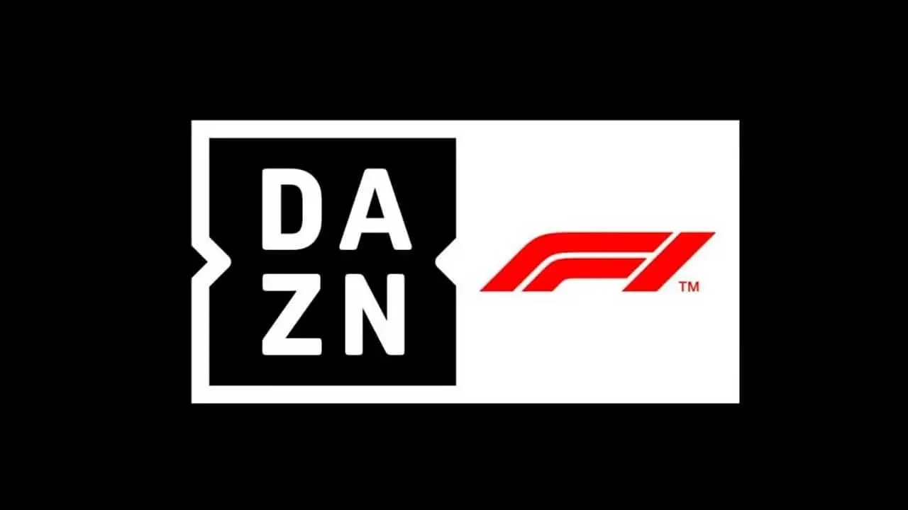
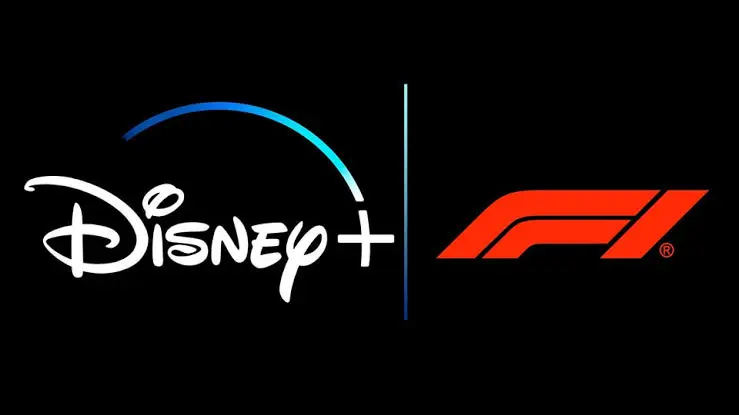
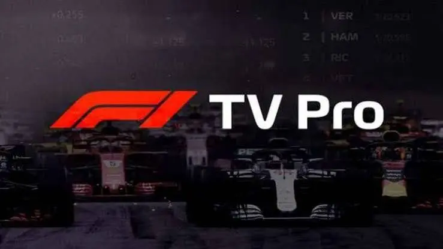

Inicio > Donde ver
Donde ver la Fórmula 1
Descubre dónde ver la Fórmula 1 en directo desde España y Latinoamérica, así como a través de F1 TV, la plataforma oficial del campeonato. Consulta las diferentes opciones disponibles para disfrutar de los entrenamientos, las clasificaciones y todas las carreras de la temporada.

España
DAZN es la opción principal para ver la F1 en España. Ofrece entrenamientos, clasificación, carreras y contenido adicional según el plan contratado.
Ver DAZN
Latinoamérica
ESPN / Disney+ es una de las principales opciones para ver la Fórmula 1 en Latinoamérica. Ofrece entrenamientos libres, clasificación y carreras en directo, además de programas y análisis de la competición, según el país y el plan contratado.
Ver Disney+
Oficial F1 TV
Fórmula1 TV es la plataforma oficial de streaming de la Fórmula 1. Permite acceder a retransmisiones en directo en los países donde está disponible, cámaras onboard de los pilotos, radios de equipo, cronometraje en directo, repeticiones, resúmenes y contenido exclusivo.
Ver F1 TV